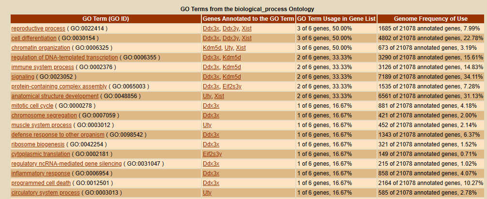

Differential Gene Expression in the Heart of the House Mouse Based on Age and Sex
Indronil Bhattacharjee (IB) and Erica Flores (EF)
Abstract
Sexual dimorphism is a well-known phenomenon inherent to biological systems, processes beyond those involved in sexual reproduction. Due to the distribution of different chromosomes between the sexes, there is a fundamental difference in the genetic makeup that extends to differences in signal transduction and regulation. Furthermore, this leads to overall changes in biological processes, including those of disease progression and aging. Here, we explore questions about differential gene expression in the aging heart of mice, including both males and females. We utilize a public data set of RNA-seq reads from a published project, in order to confirm the results of the authors, as well as become familiar with bioinformatics work flows. We found that our overall results concur with the author, there are clear differences in aging between males and females, and there is in fact an interaction between age and sex. Many of the top aging genes that differed between the sexes are involved in immune function and homeostasis. This study highlights the importance of experimental design, particularly in disease research where the goal is to find a treatment that works for as many people as possible. Understanding the fundamental biology of the model system is critical to correctly interpreting the results and
Introduction
Bioinformatics has revolutionized the progression of biological research, allowing us to compare entire transcriptomes of specific tissues across varying conditions. In terms of experimental design, it is critical to account for all of the biological variables that can affect gene expression, including those naturally present in model organisms.
One particular variable that is prevalent in biological models is sex, as the sex chromosomes differ between males (XY) and females (XX) in mammals. When considering any research questions that involve a living model, we must consider that sex could have an effect on our results due to the differences in the underlying genome.
In terms of aging and disease, it has been shown previously that there is a clear sex bias, where women typically have higher longevity than men and tend to develop different aging-related diseases (Tower et al 2017).
According to the National Center for Health Statistics, “Heart disease is the leading cause of death for men, women, and people of most racial and ethnic groups in the United States.” (NCHS 2018-2021). In this project, we utilize a publicly available transcriptome data set to explore the effects of aging and sex on gene expression in the heart of mice( Mus musculus): NIH BioProject PRJNA835826 “Effects of age and sex on gene expression in the mouse heart (house mouse)”. Later, we compare our analysis to the paper published by the Han research group(Han et al 2022). 12 RNA-seq samples were used for analysis, comprised of four groups that cover the variables of age (4 months and 20 months) and sex (M and F), which are summarized in the table below (Table 1).
Mouse Heart Sample Key
ID
Sex
Age (months)
Replicate
SRR19123213
M
20
R3
SRR19123214
M
20
R2
SRR19123215
M
20
R1
SRR19123216
F
20
R3
SRR19123217
F
20
R2
SRR19123218
F
20
R1
SRR19123219
M
4
R3
SRR19123220
M
4
R2
SRR19123221
M
4
R1
SRR19123222
F
4
R3
SRR19123223
F
4
R2
SRR19123224
F
4
R1
Results
Task 1. Download Data & Transcriptome Assembly
The initial steps of this project were accomplished via the command line using Linux. First, the SRA toolkit was used to download the fastq sequence data from the experiment from NCBI GEO. STAR was then used to build an index from the mouse genome and annotation files to generate the BAM and junction files. HTseq was then used to obtain the raw read counts for each annotated gene. We have included the code in the ’Methods’ section.
Task 2. PCA Plot on Raw Read Counts
Raw read count files generated from HTseq were read into R Studio, and a count matrix for each gene in the sequencing data was generated. A principal component analysis (PCA) plot summarizing the similarity between the samples was created.
The following objects are masked from 'package:stats':
filter, lag
The following objects are masked from 'package:base':
intersect, setdiff, setequal, union
library(ggplot2)
sample <-c()size <-c()# Create a list of filenames for your raw read count filesfile_names <-c("raw_read_counts_SRR19123213.txt","raw_read_counts_SRR19123214.txt","raw_read_counts_SRR19123215.txt","raw_read_counts_SRR19123216.txt","raw_read_counts_SRR19123217.txt","raw_read_counts_SRR19123218.txt","raw_read_counts_SRR19123219.txt","raw_read_counts_SRR19123220.txt","raw_read_counts_SRR19123221.txt","raw_read_counts_SRR19123222.txt","raw_read_counts_SRR19123223.txt","raw_read_counts_SRR19123224.txt")2
[1] 2
# Initialize an empty data frame to store read countsraw_count_data <-data.frame()# Loop through the files and read the data, excluding the last 5 rowsfor (file in file_names) { data <-read.table(file, sep ="\t", col.names =c("Gene", file), stringsAsFactors =FALSE) data <-head(data, -5) # Exclude the last 5 rows# Rename the file column to have a consistent name for joining col_name <-gsub(".txt","",gsub("raw_read_counts_", "", file)) sample <-c(sample,col_name)colnames(data)[2] <- col_name size <-c(size, sum(data[, 2]))if (nrow(raw_count_data) ==0) {# If raw_count_data is empty, assign the data to it raw_count_data <- data } else {# Otherwise, left join the data with raw_count_data raw_count_data <-left_join(raw_count_data, data, by ="Gene") }}# Remove the "Gene" column as it's not needed for PCAraw_count_data0 <- raw_count_dataraw_count_data <- dplyr::select(raw_count_data, -Gene)# Standardize the data if necessary (centering and scaling)raw_count_data <-scale(raw_count_data)raw_count_data <-t(raw_count_data)
The following PCA plots display three covariates (sex, age, and library size) for raw and normalized read counts. The size of each point represents the library size, color indicates the age (blue = 4 months and red = 20 months), and sex is indicated by shape (circle = female and triangle = male).
suppressWarnings({ suppressMessages({# Perform PCApca_result <-prcomp(raw_count_data, scale =TRUE)# Create a data frame with PCA results and sample informationpca_data <-data.frame(PC1 = pca_result$x[, 1], PC2 = pca_result$x[, 2])# Sample information (replace with your actual data)sample_info <-data.frame(Sample = sample, # Sample namesAge =c( "20months", "20months", "20months", "20months", "20months", "20months","4months", "4months", "4months", "4months", "4months", "4months"), # Age informationSex =c("Male", "Male", "Male", "Female", "Female", "Female","Male", "Male", "Male", "Female", "Female", "Female"), # Sex informationLibrarySize = size # Library size information)# Combine PCA results with sample informationpca_data <-cbind(pca_data, sample_info)# Calculate the variance explained by each principal componentvariance <-round(100* pca_result$sdev^2/sum(pca_result$sdev^2), 2)# Create a PCA plotpca_plot <-ggplot(pca_data, aes(x = PC1, y = PC2, color = Age, shape = Sex, size = LibrarySize)) +geom_point() +scale_color_manual(values =c("4months"="blue", "20months"="red")) +scale_shape_manual(values =c("Female"=16, "Male"=17)) +labs(title ="PCA Plot of Raw Read Count Data", x =paste("PC1 (Variance:", variance[1], "%)"), y =paste("PC2 (Variance:", variance[2], "%)"))# Display the PCA plotprint(pca_plot)})})
If we look along the PC1 axis, which accounts for 86.64% of the variance, we see that the main effect is due to sex. The majority of the male samples grouped together near the midline and negative quadrant and the female samples are more skewed to the left. Looking along the PC2 axis, which accounts for 3.75% of the variance, there is a slight effect of library size. Some of the larger libraries are grouped towards the negative axis and the more middle size libraries are near the positive axis. Overall, the male samples seem to be less variable than the female samples.
Task 3. PCA Plot on Normalized Counts
suppressWarnings({ suppressMessages({# Load required librarieslibrary(DESeq2)library(ggplot2)# Create a DESeqDataSetdds <-DESeqDataSetFromMatrix(countData = dplyr::select(raw_count_data0, -Gene), colData = sample_info, design =~ Age + Sex)# Normalize the data by library sizedds <-DESeq(dds)# Extract the normalized count datanormalized_counts <-counts(dds, normalized =TRUE)# Perform PCA on the normalized datapca_result_normalized <-prcomp(t(normalized_counts), scale. =FALSE)# Create a data frame with PCA results and sample informationpca_data_normalized <-data.frame(PC1 = pca_result_normalized$x[, 1], PC2 = pca_result_normalized$x[, 2])# Combine PCA results with sample informationpca_data_normalized <-cbind(pca_data_normalized, sample_info)# Calculate the variance explained by each principal componentvariance_explained <-round(100* pca_result_normalized$sdev^2/sum(pca_result_normalized$sdev^2), 2)# Create a PCA plot for the library-size normalized data with variance in axis labelspca_plot_normalized <-ggplot(pca_data_normalized, aes(x = PC1, y = PC2, color = Age, shape = Sex, size = LibrarySize)) +geom_point() +scale_color_manual(values =c("4months"="blue", "20months"="red")) +scale_shape_manual(values =c("Female"=16, "Male"=17)) +labs(title ="PCA Plot of Library-Size Normalized Data", x =paste("PC1 (Variance:", variance_explained[1], "%)"), y =paste("PC2 (Variance:", variance_explained[2], "%)"))# Display the PCA plot for normalized dataprint(pca_plot_normalized)})})
For the second PCA plot, samples were first normalized to library size. If we look along the PC1 axis, which accounts for 89.92% of the variance, we see a separation again in sex, with most of the male samples clustered together on the negative side and the female samples on the positive side. Along the PC2 axis (5.39% variance), we see a stronger effect of age than in the raw read count PCA plot. where the 20-month old samples are more clustered together and the 4-month old samples are closer together. There are, however two outliers in the top right quadrant and top left quadrant, particularly the female 20-month old sample which is farther away on the PC2 axis from the other samples in that same age/sex group.
The normalization of library size did seem to help group samples from one of the 4 groups closer together. Even when we ignore the outliers, there does seem to be a bit of overlap towards the middle of the plot. This may indicate some more complex interactions between age and sex that need to be investigated further.
Task 4. Differentially Expressed Genes
suppressWarnings({ suppressMessages({# Assuming you have already loaded the DESeq2 library and created the DESeqDataSet object 'dds' as in Task 3.library(DESeq2)# Define the GLM modeldesign(dds) <-~ Age + Sex + Age:Sexdds <-DESeq(dds)# To extract results for each effect, you can use the following contrasts:# 1. Aging effectresults_age0 <-results(dds, contrast=c("Age", "20months", "4months"))# 2. Sex effectresults_sex0 <-results(dds, contrast=c("Sex", "Male", "Female"))# 3. Age-Sex intersectionresults_interaction0 <-results(dds, name ="Age4months.SexMale") })})
log2 fold change (MLE): Age 20months vs 4months
Wald test p-value: Age 20months vs 4months
DataFrame with 56941 rows and 7 columns
baseMean log2FoldChange lfcSE stat pvalue padj
<numeric> <numeric> <numeric> <numeric> <numeric> <numeric>
1 2480.01099 0.00821378 0.0914856 0.0897823 0.9284602 0.978919
2 0.24489 2.30183356 4.3224718 0.5325271 0.5943609 NA
3 261.51434 -0.03804055 0.1593583 -0.2387107 0.8113299 0.938462
4 1960.37691 0.45308644 0.5487639 0.8256492 0.4090031 0.731146
5 60.17451 0.51302724 0.2797859 1.8336419 0.0667072 0.320532
... ... ... ... ... ... ...
56937 0.00000 NA NA NA NA NA
56938 0.35343 0.705173 4.40729 0.160001 0.87288 NA
56939 0.00000 NA NA NA NA NA
56940 0.00000 NA NA NA NA NA
56941 0.00000 NA NA NA NA NA
Gene
<character>
1 ENSMUSG00000000001.5
2 ENSMUSG00000000003.16
3 ENSMUSG00000000028.16
4 ENSMUSG00000000031.19
5 ENSMUSG00000000037.18
... ...
56937 ENSMUSG00002076988.1
56938 ENSMUSG00002076989.1
56939 ENSMUSG00002076990.1
56940 ENSMUSG00002076991.1
56941 ENSMUSG00002076992.1
results_sex0
log2 fold change (MLE): Sex Male vs Female
Wald test p-value: Sex Male vs Female
DataFrame with 56941 rows and 7 columns
baseMean log2FoldChange lfcSE stat pvalue padj
<numeric> <numeric> <numeric> <numeric> <numeric> <numeric>
1 2480.01099 -0.0336455 0.0914548 -0.367893 0.712953257 0.9933527
2 0.24489 -2.3538311 4.3224718 -0.544557 0.586058416 NA
3 261.51434 -0.0195886 0.1593915 -0.122896 0.902189138 0.9983566
4 1960.37691 0.2880053 0.5485793 0.525002 0.599581677 0.9814042
5 60.17451 -1.0688830 0.2897637 -3.688810 0.000225306 0.0258233
... ... ... ... ... ... ...
56937 0.00000 NA NA NA NA NA
56938 0.35343 -0.75717 4.40729 -0.171799 0.863595 NA
56939 0.00000 NA NA NA NA NA
56940 0.00000 NA NA NA NA NA
56941 0.00000 NA NA NA NA NA
Gene
<character>
1 ENSMUSG00000000001.5
2 ENSMUSG00000000003.16
3 ENSMUSG00000000028.16
4 ENSMUSG00000000031.19
5 ENSMUSG00000000037.18
... ...
56937 ENSMUSG00002076988.1
56938 ENSMUSG00002076989.1
56939 ENSMUSG00002076990.1
56940 ENSMUSG00002076991.1
56941 ENSMUSG00002076992.1
results_interaction0
log2 fold change (MLE): Age4months.SexMale
Wald test p-value: Age4months.SexMale
DataFrame with 56941 rows and 7 columns
baseMean log2FoldChange lfcSE stat pvalue padj
<numeric> <numeric> <numeric> <numeric> <numeric> <numeric>
1 2480.01099 -0.0192955 0.129398 -0.149118 0.881460773 0.9739582
2 0.24489 2.0996859 6.173097 0.340135 0.733754925 NA
3 261.51434 -0.0539806 0.225514 -0.239367 0.810821328 0.9552149
4 1960.37691 -0.4750037 0.776044 -0.612084 0.540482429 0.8620503
5 60.17451 1.3469929 0.404531 3.329767 0.000869186 0.0682513
... ... ... ... ... ... ...
56937 0.00000 NA NA NA NA NA
56938 0.35343 3.14743 6.16982 0.510133 0.609958 NA
56939 0.00000 NA NA NA NA NA
56940 0.00000 NA NA NA NA NA
56941 0.00000 NA NA NA NA NA
Gene
<character>
1 ENSMUSG00000000001.5
2 ENSMUSG00000000003.16
3 ENSMUSG00000000028.16
4 ENSMUSG00000000031.19
5 ENSMUSG00000000037.18
... ...
56937 ENSMUSG00002076988.1
56938 ENSMUSG00002076989.1
56939 ENSMUSG00002076990.1
56940 ENSMUSG00002076991.1
56941 ENSMUSG00002076992.1
Task 5. Top Differentially Expressed Genes for Each Effect
Differentially expressed genes (DEGs) were determined for each of the three effects:
aging effect
sex effect
aging and sex interaction effect
DEGs were filtered at a specific FDR threshold of 0.05, in order to capture the most significant genes while minimizing the possibility of false positives, and report the total number of DEGs for each effect. After filtering, we report and visualize the top 5 DEGs for each effect according to padj values in addition to the top 5 DEGs according to log fold change.
# Perform differential expression analysis for aging effectresults_age <-results(dds, contrast =c("Age", "20months", "4months"))# Perform differential expression analysis for sex effectresults_sex <-results(dds, contrast =c("Sex", "Male", "Female"))# Perform differential expression analysis for aging and sex interaction effectresults_interaction <-results(dds, name ="Age4months.SexMale")# Filter DEGs at a specified FDR threshold (e.g., 0.05)results_age <- results_age0[which(results_age$padj <0.05), ]results_sex <- results_sex0[which(results_sex$padj <0.05), ]results_interaction <- results_interaction0[which(results_interaction$padj <0.05), ]
# Total number of DEGs for each effecttotal_DEGs_age <-nrow(results_age)total_DEGs_sex <-nrow(results_sex)total_DEGs_interaction <-nrow(results_interaction)cat("Total DEGs for Aging Effect (FDR < 0.05):", total_DEGs_age, "\n")
Total DEGs for Aging Effect (FDR < 0.05): 1123
cat("Total DEGs for Sex Effect (FDR < 0.05):", total_DEGs_sex, "\n")
Total DEGs for Sex Effect (FDR < 0.05): 226
cat("Total DEGs for Interaction Effect (FDR < 0.05):", total_DEGs_interaction, "\n")
Total DEGs for Interaction Effect (FDR < 0.05): 169
# Visualize the top five genes for each effecttop_genes_age <-head(results_age[order(results_age$padj), ], 5)top_genes_sex <-head(results_sex[order(results_sex$padj), ], 5)top_genes_interaction <-head(results_interaction[order(results_interaction$padj), ], 5)# Print the top genescat("\nTop 5 DEGs for Aging Effect by Padj Value:\n")
# Load required librarieslibrary(pheatmap)# Define the top gene names for each effecttop_gene_names_age <- top_genes_age$Genetop_gene_names_sex <- top_genes_sex$Genetop_gene_names_interaction <- top_genes_interaction$Gene# Filter the raw count data for the top genestop_gene_counts_age <- raw_count_data0[raw_count_data0$Gene %in% top_gene_names_age, ]top_gene_counts_sex <- raw_count_data0[raw_count_data0$Gene %in% top_gene_names_sex, ]top_gene_counts_interaction <- raw_count_data0[raw_count_data0$Gene %in% top_gene_names_interaction, ]plot_heatmap <-function(top_gene_counts, effect_name) { gene_names <- top_gene_counts$Gene top_gene_counts <- top_gene_counts[, -1] # Exclude the 'Gene' columnpheatmap(as.matrix(top_gene_counts),main =paste("Top Genes for", effect_name),color =colorRampPalette(c("blue", "white", "red"))(100),fontsize_row =8,labels_row = gene_names)}# Plot the heatmaps for each effectplot_heatmap(top_gene_counts_age, "Aging Effect by Padj Value")
plot_heatmap(top_gene_counts_sex, "Sex Effect by Padj Value")
plot_heatmap(top_gene_counts_interaction, "Interaction Effect by Padj Value")
# Visualize the top five genes for each effecttop_genes_age_by_lfc <-tail(results_age[order(abs(results_age$log2FoldChange)), ], 5)top_genes_sex_by_lfc <-tail(results_sex[order(abs(results_sex$log2FoldChange)), ], 5)top_genes_interaction_by_lfc <-tail(results_interaction[order(abs(results_interaction$log2FoldChange)), ], 5)# Print the top genescat("\nTop 5 DEGs for Aging Effect by LogFoldChange:\n")
# Load required librarieslibrary(pheatmap)# Define the top gene names for each effecttop_gene_names_age_by_lfc <- top_genes_age_by_lfc$Genetop_gene_names_sex_by_lfc <- top_genes_sex_by_lfc$Genetop_gene_names_interaction_by_lfc <- top_genes_interaction_by_lfc$Gene# Filter the raw count data for the top genestop_gene_counts_age_by_lfc <- raw_count_data0[raw_count_data0$Gene %in% top_gene_names_age_by_lfc, ]top_gene_counts_sex_by_lfc <- raw_count_data0[raw_count_data0$Gene %in% top_gene_names_sex_by_lfc, ]top_gene_counts_interaction_by_lfc <- raw_count_data0[raw_count_data0$Gene %in% top_gene_names_interaction_by_lfc, ]plot_heatmap <-function(top_gene_counts_by_lfc, effect_name) { gene_names <- top_gene_counts_by_lfc$Gene top_gene_counts_by_lfc <- top_gene_counts_by_lfc[, -1] # Exclude the 'Gene' columnpheatmap(as.matrix(top_gene_counts_by_lfc),main =paste("Top Genes for", effect_name),color =colorRampPalette(c("blue", "white", "red"))(100),fontsize_row =8,labels_row = gene_names)}# Plot the heatmaps for each effectplot_heatmap(top_gene_counts_age_by_lfc, "Aging Effect by LogFoldChange")
plot_heatmap(top_gene_counts_sex_by_lfc, "Sex Effect by LogFoldChange")
plot_heatmap(top_gene_counts_interaction_by_lfc, "Interaction Effect by LogFoldChange")
Top DEGs for Each Effect
Here is a review of the results from the top DGEs and we would like to note that we go into more detail about the biological implications in the Extra Credit Task E1.
AGE
According to the dendrogram plotted along with the heatmap according to padj value, the male samples are clustered together, including a branch for the younger female samples. The older female sample shows very high expression of Cpxm2 (ENSMUSG00000030862.14) carboxypeptidase X, which is involved with peptide metabolic processes. Since we do not see the same level of expression in the older male samples, it seems there may be evidence of underlying sex-age interaction. Overall, many of the genes are involved in signaling, structure, and metabolic processes, which we would expect to be affected by age.
SEX
The heatmap clusters clearly into two groups, male and female, and as expected. All of these genes are found to be linked to either the X chromosome (Xist, Ddx3x) or Y chromosome (Ddx3y, Ulty, Kdm5d) according to the gene database and are expressed accordingly to sex in the data. In addition to ‘participat[ing] in known sex-determination’ according to the paper, many of these genes also function in the processes of transcription and chromatin remodeling (Han et al 2022). This indicates an underlying difference in transcription regulation between the sexes.
SEX-AGE INTERACTION
Similar to what was found by the original authors, we found several cardiac genes in our top DEGs that seem to demonstrate a sex-age interaction, where Cpxm2 and Tfrc have a negative sex-age interaction (Han et al 2022). Some of these genes appear to also function in homestasis and immune processes, indicating an underlying difference in aging between the sexes.
Extra Credit Task E1 - Interpretation of top genes
The tables below summarize our top five DEGs for each effect according to either the padj value or the log-fold change value. Common genes between our results and those discovered by the authors of the original project are highlighted in blue (Han et al 2022).
Top 5 DEGs for Sex Effect by Padj Value
Top 5 DEGs for Aging Effect by Padj Value
Top 5 DEGs for Age-Sex Interaction Effect by Padj Value
Top 5 DEGs for Sex Effect by Log-fold Change Value
Top 5 DEGs for Aging Effect by Log-fold Change Value
Top 5 DEGs for Sex-Age Interaction Effect by Log-fold Change Value
E1.1 Comparison of Top DEGs to Paper
When we compare out top DEGs for each effect to the original project paper, we find that our results are consistent with the findings of the author. For each of the three effects, whether by padj or log-fold change, we had at least 1 top gene in common that was mentioned specifically in the paper.
E1.2 Biological Interpretation
In order to determine a wider overview of the biological processes that our top DEGs are involved in, we determine the Gene Onotology (GO) terms using the Generic Gene Ontology Term Mapper (Lewis-Sigler Institute for Integrative Genomics, Princeton University). The top 5 DEGs sorted by padj value and log-fold change value were combined in order to capture more terms.
AGE
When we combine the top 5 DEGs by Age Effect by padj and logfold change values, the gene ontology (GO) terms include cell differentiation, anatomical structure development, defense response, immune response, signaling, transport, and metabolic processes. This is consistent with the paper, where they say “that sex-differential genes appear to primarily cluster around metabolic pathways” (Han et al 2022).
It is also important to consider that many genes function in multiple pathways, for example, Bmp10 (bone morphogenetic protein-10) sounds out of place in the heart. In fact, it has been found to be critical for cardiomyocyte proliferation (Sun et al 2014), a process that is necessary for cardiac repair after stress or injury and likely becomes less robust as age increases.
GO Terms for Age Effect (Top Padj and Logfold Change
SEX
As expected, all of the DEGs determined for the effect of sex are linked to either the X or Y chromosome. The gene ontology (GO) terms include reproductive process, cell differentiation, chromatin organization, regulation of DNA-templeted transcription, immune processes, etc. These results indicate that the regulation of transcription differs between the sexes, which subsequently affects cell signaling pathways. There may be differences in the immune system reactions as well, which complicates the study of aging-related diseases.
In relation to heart disease, there are many sex-realted differences in the diagnosis and treatment of disease. One study found that “heart failure disproportionately contributes to coronary heart disease mortality in women, potentially due to undiagnosed ischaemic heart disease in women. The strength of the association with cardiovascular risk factors differ by sex.” (Snyder et al 2014). There are also differences in treatments for cardiac failure, where “evidence suggests that optimal survival in women occurs with lower doses of β blockers, angiotensin receptor blockers, and angiotensin converting enzyme inhibitors than in men” (Santema et al 2019).

Go Terms for Sex Effect (Top Padj and Logfold Changes)
AGE-SEX INTERACTION
Our model explores not only the effects of age and sex on cardiac gene expression but also the possible interactions of age and sex. Due to the underlying differences between the transcriptomes of the two sexes, the expression of genes related to aging seems to be affected by sex.
The gene ontology (GO) terms include signaling, anatomical structure development, cell differentiation, immune system process, nervous system processes cell adhesion, programmed cell death, etc.
Interestingly, the cardiac gene Tfrc is critical to heart function by promoting iron uptake. In a recent paper, the researchers found that this gene also participates in immune processes by promoting macrophage infiltration (Pan et al 2023). This example demonstrates the hidden complexity of gene function and interactions, which may not be apparent without more research into specific genes.
GO Terms for Age-Sex Interaction (Top Padj and Log-Fold Change)
RNA-seq data download, assembly, and read counting
The initial steps of this project were accomplished via the command line using Linux. First, the SRA toolkit was used to download the fastq sequence data from the experiment from NCBI GEO. STAR was then used to build an index from the mouse genome and annotation files to generate the BAM and junction files. HTseq was then used to obtain the raw read counts for each annotated gene. We have included the code below.
Step 1.1 We installed the SRA Toolkit to download sequence data from NIH Sequence Read Archive (SRA).
Step 1.2 We downloaded the meta file PRJNA835826-meta.csvproviding all information about the 12 libraries.
Step 1.3
We download the data from NCBI SRA as sra files with the following commands.
The raw read counts generated from the previous step were then organized into a count matrix and used to make create the ‘Raw Read PCA Plot’. Using DESeq2, the reads were then normalized to library-size and plotted again for comparison.
Differentially Expressed Genes
Using DESeq2, we apply a GLM model with a negative binomial distribution to the data in order to determine differentially expressed genes (DEGs) in the context of our experimental factors. We chose model 3, in order to determine the effects of age or sex on gene expression, as well as the effects of the interaction between age and sex.
~ Age + Sex + Age:Sex
The Top 5 DEgs, by either padj value or log-fold change value) were plotted as heatmaps with accompanying dendrograms to show expression levels of the top genes, as well as the overall similarity in expression profiles.
Discussion
RESULT SUMMARY
Sex represents an intrinsic biological factor that has been shown to be critical to our understanding of disease and aging. The underlying baseline gene expression profiles differ due to the inheritance of different sex chromosomes in males and females. Sex represents a confounding factor that must be accounted for in experimental design, even if that is not the variable of interest. In order to address questions of the effect of age and sex on gene expression in the mouse heart, we utilize the public data set published by the original authors of the study (Han et al 2022).
We calculated the total number of DEGs for each effect (FDR < 0.05) as follows:
Total Number DEGs for each effect
Effect
Total DEGs
Age
1123
Sex
223
Age-Sex Interaction
169
Our overall results concur with the original paper, that sexual dimorphism and the underlying genetic differences influence subsequent molecular interactions and biological processes. While the top DEGs between age groups were associated with sex chromosomes (X or Y) and reproductive processes as expected, they also participated in transcription regulation and chromatin organization. These results reflect inherent differences in transcriptional processes between the sexes that produce different molecular landscapes for other biological processes, such as age, to act upon.
In terms of aging effect, many of the top DEGs were involved in cell homeostasis, metabolism, structure development, transport and signaling. Both the original authors results and ours confirm Cd209d as a DEG in older hearts, which functions as a receptor on macrophages and dendritic cells to recognize infectious agents. Another study shows that many of the DEGs in aging hearts are related to immune reactions and often upgregulated due to high protein turnover due to cellular damage (Bartling et al 2019).
While the effects of age or sex on gene expression seem clear, there appears to be a more complex effect of the interaction of these two factors. In terms of log-fold change, we see cardiac genes Tfrc and Sprr1a differentially expressed within the two age groups and the two sexes. Pak5 and Gpr158 were found to be upregulated in older hearts, which is interesting as members of the PAK family have been implicated in many age-related diseases (Amirthalingam et al 2021). Gpr158 represents a g-coupled protein receptor that is involved in pathways related to age-related memory loss (Kosmidis et al 2018).
Sexual dimorphisms are well known to be present in many cardiac diseases, in fact a study comparing mRNA microarray data of mouse and human heart tissue found that “sexually dimorphic genes overrepresented gene ontologies (GOs) important for cardiac homeostasis” (Tsuji et al 2020). These results highlight how crucially important sex-bias studies are to the progression of medical research. Treatments for disease that may be successful in one sex, may not be as effective in the other due to the fundamental differences in their gene expression profiles. A variety of biological factors can influence treatment efficacy, such as weight. Many drug doses are not standard per person, but determined based on patient weight to ensure efficacy.
In the field of cancer therapy, tumor biopsy samples from patients are often collected to determine their expression profile through molecular techniques, such as sequencing or visualization with known markers, which can influence the treatments that they may be amenable to. In the same way, understanding the molecular differences due to any biological factor, such as sex, can better direct research to develop therapies that are effective in as many people as possible.
CHALLENGES
One of the significant challenges of this work was storage space, as downloading the RNA-seq files and processing them through STAR requires an enormous amount of storage space. To solve this problem, we decided to utilize the computers on campus through the Computer Science Department. Storage was still an issue, which resulted in a slight change in workflow, downloading and processing individual files and then deleting them before starting on the next file.
FURTHER QUESTIONS
In order to delve further into the question of aging, it may be interesting to look specifically into energy metabolism and mitochondrial genes, as well as those involved in oxidative stress. Mitochondria are the main contributor of Reactive Oxygen Species (ROS), through the use of the electron transport chain, which can cause physical DNA damage (Cui et al 2012). ROS is produced through normal cellular functions, but can also be induced by environmental stress, such as radiation or UV. We may gain some more insight into the aging process between the sexes by narrowing focus to these pathways.
Distribution of Work
Indronil Bhattacharjee (IB) and Erica Flores (EF) both contributed to the project. IB provided the coding for data analysis and produced the outputs and figures. EF wrote the report, providing some more biological context for the results.
References
Han, Yu, Sara A Wennersten, Julianna M Wright, R W Ludwig, Edward Lau, and Maggie P Y Lam. 2022. “Proteogenomics Reveals Sex-Biased Aging Genes and Coordinated Splicing in Cardiac Aging.” Am J Physiol Heart Circ Physiol 323 (3): H538–58. https://doi.org/10.1152/ajpheart.00244.2022.
Tower J. Sex-Specific Gene Expression and Life Span Regulation. Trends Endocrinol Metab. 2017 Oct;28(10):735-747. doi: 10.1016/j.tem.2017.07.002. Epub 2017 Aug 2. PMID: 28780002; PMCID: PMC5667568. https://www.ncbi.nlm.nih.gov/pmc/articles/PMC5667568/
Pan Y, Yang J, Dai J, Xu X, Zhou X, Mao W. TFRC in cardiomyocytes promotes macrophage infiltration and activation during the process of heart failure through regulating Ccl2 expression mediated by hypoxia inducible factor-1α. Immun Inflamm Dis. 2023 Aug;11(8):e835. doi: 10.1002/iid3.835. PMID: 37647427; PMCID: PMC10461419. https://pubmed.ncbi.nlm.nih.gov/37647427/
Cui H, Kong Y, Zhang H. Oxidative stress, mitochondrial dysfunction, and aging. J Signal Transduct. 2012;2012:646354. doi: 10.1155/2012/646354. Epub 2011 Oct 2. PMID: 21977319; PMCID: PMC3184498. https://pubmed.ncbi.nlm.nih.gov/21977319/
21 Feb 2020: Tsuji M, Kawasaki T, Matsuda T, Arai T, Gojo S, et al. (2020) Correction: Sexual dimorphisms of mRNA and miRNA in human/murine heart disease. PLOS ONE 15(2): e0229750. https://doi.org/10.1371/journal.pone.0229750
Kosmidis S, Polyzos A, Harvey L, Youssef M, Denny CA, Dranovsky A, Kandel ER. RbAp48 Protein Is a Critical Component of GPR158/OCN Signaling and Ameliorates Age-Related Memory Loss. Cell Rep. 2018 Oct 23;25(4):959-973.e6. doi: 10.1016/j.celrep.2018.09.077. PMID: 30355501; PMCID: PMC7725275.
Sun L, Yu J, Qi S, Hao Y, Liu Y, Li Z. Bone morphogenetic protein-10 induces cardiomyocyte proliferation and improves cardiac function after myocardial infarction. J Cell Biochem. 2014 Nov;115(11):1868-76. doi: 10.1002/jcb.24856. PMID: 24906204. https://pubmed.ncbi.nlm.nih.gov/24906204/
Snyder ML , Love S-A , Sorlie PD et al. Redistribution of heart failure as the cause of death: the Atherosclerosis Risk in Communities Study.Popul Health Metr. 2014; 12: 10 10.1186/1478-7954-12-10
Santema BT Ouwerkerk W Tromp J et al. Identifying optimal doses of heart failure medications in men compared with women: a prospective, observational, cohort study. Lancet. 2019; 394: 1254-1263 https://doi.org/10.1016/S0140-6736(19)31792-1